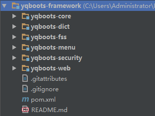

YQBoots Framework is built by Maven, and currently divided into 6 sub-modules.

After you run spring-boot:run for the "yqboots-web-site" sub-module, you will have the application running at http://localhost:8080
spring-boot:run